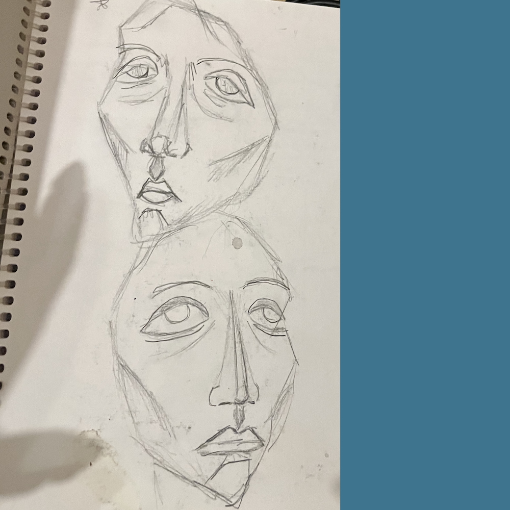

This is what my drawing style looked like coming out of high school. I was really drawn to expressive, non-realistic human figures. Drawing was something I genuinely loved and felt connected to, and this shows the way I naturally approached it before any formal training.
